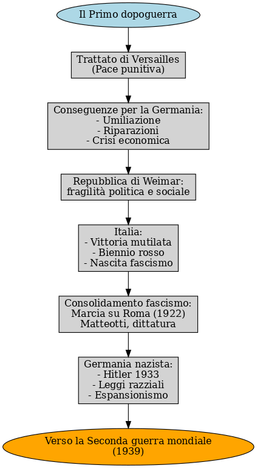
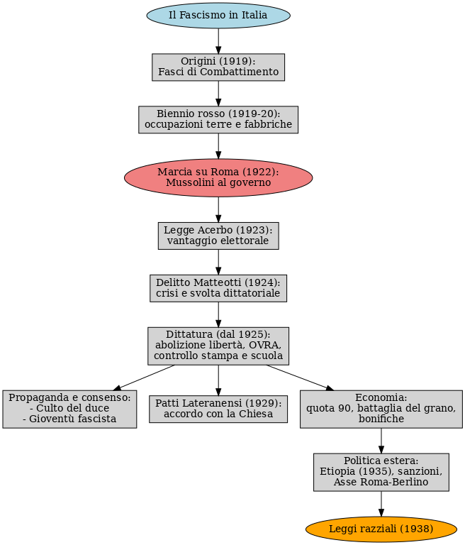
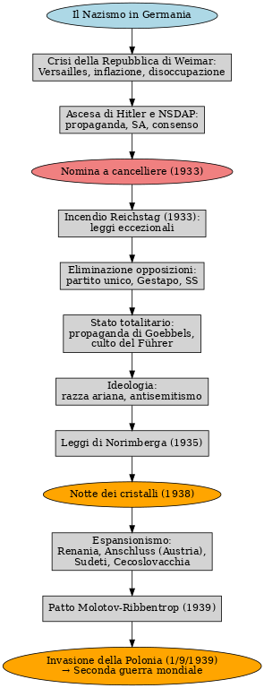

I problemi dell'Europa dopo il 1918
La Prima guerra mondiale lasciò dietro di sé un continente sconvolto: milioni di morti e feriti, città e campagne distrutte, economie in ginocchio. I grandi imperi – tedesco, austro‑ungarico, russo e ottomano – crollarono, mentre i trattati di pace ridisegnarono la carta politica europea più in una logica di punizione che di riconciliazione.
- Crisi economica e sociale: inflazione, disoccupazione, povertà diffusa.
- Crollo dei vecchi imperi e nascita di nuovi stati fragili e instabili.
- Pace punitiva imposta alla Germania con il Trattato di Versailles.
- Paure e tensioni sociali che aprono la strada a movimenti estremisti.
- Nascita e consolidamento di regimi autoritari: fascismo in Italia e nazismo in Germania.
Uno sguardo d'insieme
Questo schema riassume il percorso che va dal Trattato di Versailles allo scoppio della Seconda guerra mondiale.

Percorso di studio
Lezione 1
L'Europa dopo la Grande Guerra
Lezione 2
La Germania e la Repubblica di Weimar
Lezione 3
L'Italia dal Biennio rosso alla nascita del fascismo
Lezione 4
Marcia su Roma e consolidamento del regime fascista
Lezione 5
Il regime fascista negli anni Venti e Trenta
Lezione 6
La Germania nazista e l'Europa verso un nuovo conflitto
Approfondimento
La Rivoluzione russa e la nascita dell'URSS
Collegamenti: fascismo e nazismo


Questi schemi aiutano a visualizzare i passaggi principali dell'ascesa dei regimi totalitari. Sono collegati alle Lezioni 3–6 del percorso.